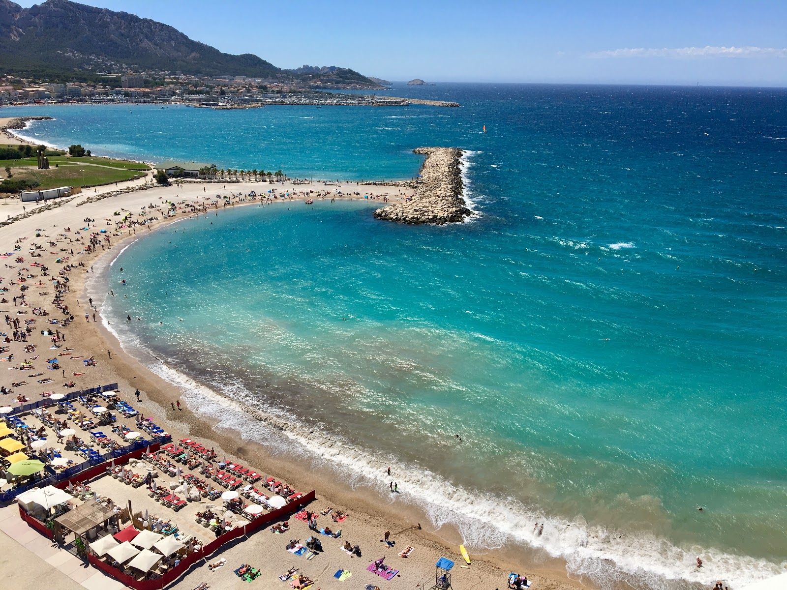

Découvrez tout ce que la magnifique ville de Marseille a à offrir.
De ses marchés animés à ses plages ensoleillées, chaque coin de la
ville révèle une aventure unique. Les amateurs d'histoire peuvent
explorer les vestiges antiques tels que le Vieux-Port, tandis que
les amateurs de nature peuvent s'émerveiller devant les calanques
pittoresques qui bordent la mer Méditerranée.
1. Marché aux poissons de la Criée
Le marché aux poissons de la Criée est un lieu de référence et l’un des
meilleurs marchés de Marseille. Il existe depuis le début du XXe siècle.
Situé dans le quartier pittoresque du Vieux-Port, c’est un endroit idéal
pour acheter du poisson ou des fruits de mer frais, tels que le bar de Méditerranée,
le rouget, les sardines et les oursins. Tous sont disponibles à des prix
relativement attractifs par rapport aux supermarchés et sont accompagnés
du sourire des pêcheurs et de leurs conseils culinaires.
Le marché a traditionnellement lieu tous les matins.
Même si vous n’avez pas l’intention d’acheter du poisson, vous trouverez
cet endroit intéressant pour son authenticité, l’accent chantant de la
ville et les échanges avec les habitants.
2. Marché du Prado
En pleine ville, le marché animé et bruyant du Prado est un lieu où les
habitants viennent remplir leurs paniers. Vous trouverez de tout ici, de la
nourriture aux vêtements, en passant par les chaussures, les accessoires
de mode, les jouets, les livres et les articles ménagers. S’étendant le
long de l’avenue du Prado entre la place Castellane et Périer, c’est l’un
des plus grands marchés de France et de loin l’un des meilleurs de Marseille.
C’est le matin tôt qu’on y est le plus à l’aise car il se remplit rapidement. Après avoir découvert
ce marché urbain en plein air, vous pourrez poursuivre votre visite de la ville en vous dirigeant
vers le magnifique parc Borély et les plages de Marseille, à 30 minutes de marche d’ici.
3. Le cours Julien, le street art en marche à Marseille
Dans le quartier Notre-Dame-du-Mont, le cours Julien est le quartier artistique
par excellence dans lequel le street art est mis en valeur. Vous déambulez dans
les ruelles décorées de graffitis d’artistes pour découvrir les boutiques artisanales
aux allures bobo et vintage. Lieu atypique de Marseille, le cours Ju se fréquente
aussi bien en journée pour les terrasses de ses restaurants qu’en soirée pour
son ambiance festive et cosmopolite.
Chaque mercredi matin, un marché paysan et
bio vous attend pour goûter les produits frais et de qualité des producteurs locaux.
Si vous le désirez, l’Office de Tourisme de Marseille propose des visites guidées sur
le thème du street art afin d’en savoir plus sur les œuvres du cours Julien.
4. Le Vallon des Auffes, village de pêcheurs au charme authentique
Le Vallon des Auffes doit son nom à l’auffe (ou auffo en provençal), une plante utilisée
dans la fabrication des cordages de navire ou des filets de pêche. Le petit port compte
donc plusieurs dizaines de petites maisons de pêcheurs typiques et très colorées, mais
aussi leurs bateaux dont plusieurs pointus, des bateaux typiques provençaux qui donnent
du charme à ce lieu. Un pont enjambe le port sur 60m, il a été construit au XIXe siècle par
Jean François Mayor de Montricher, en même temps que la Corniche Kennedy. Trois arches de
17m de haut complète l’édifice. L’esplanade à l’entrée du Vallon située sur la Corniche
offre également le monument aux morts de l’Armée d’Orient et des terres lointaines,
une sculpture de 5m de haut représentant une allégorie de la victoire et inaugurée en 1927
par le président Gaston Doumergue. Elle est classée monument historique en 2009.
5. Les plages de Marseille
La ville dispose de plusieurs endroits parfaits pour les baignades en famille, en solo ou entre amis.
Découvrez ses Calanques, mais également ses lieux de baignade secrets, propres aux marseillais qu’on
vous dévoile ici ! Comment parler de Marseille sans évoquer ses plages et sa Méditerranée ?

Les incontournables
Découvrez les lieux incontournables qui participent à son rayonnement, avec plus de 26 siècles d’histoire.
Côté mer avec le Parc National des Calanques, les îles du Frioul, les plages et les randonnées, et côté ville
avec la culture, le patrimoine, les spécialités culinaires et les traditions. Formée au coeur d’une calanque
naturelle il y a plus de 2 600 ans, la ville de Marseille a traversé les siècles et offre aujourd’hui des
trésors architecturaux d’époques variées. Marseille s’étend sur 240 km2 dont 100 km2 d’espaces naturels
et les sites incontournables se trouvent aux quatre coins de la ville. Voici une liste non exhaustive des
sites immanquables de Marseille.
Le vieux port
Tout comme Notre Dame de la Garde, le Vieux-Port de
Marseille est l’un des symboles de la ville, situé en
bas de la fameuse Canebière. Rassemblements, grands
événements, feu d’artifice, il est le point de
repère des Marseillais !
La basilique Notre-Dame de la Garde
Figure emblématique de la Ville de Marseille,
elle veille sur les marins, les pêcheurs et tous les
Marseillais. Lors de votre séjour dans la cité phocéenne,
allez rendre visite à la « Bonne Mère » comme on la
surnomme à Marseille, et admirez du haut de la colline,
le panorama qui s’offre à vous. En effet, elle est visible
des quatre coins de la ville et fait face à la mer
Méditerranée de toute sa grandeur.
L'Abbaye Saint-Victor
L’Abbaye Saint-Victor fait partie des lieux à ne pas manquer à Marseille.
La visite de cet édifice et de ses cryptes vous plonge dans le passé
religieux de la ville et offre une vue imprenable sur le Vieux-Port.
En effet, sa tour a été un point de repère dans le paysage de nombreux marseillais.
En plus d’apprécier le magnifique panorama, vous pourrez visiter ce monument qui a
façonné l’Histoire de Marseille et qui est un véritable écrin de l’art paléochrétien.
Avec ses cryptes, ses chapelles et ses sarcophages, les amateurs de culture et
d’Histoire seront ravis de leur excursion.
Les calanques de Marseille
Le massif des Calanques est une merveille de la nature nichée entre Marseille
et Cassis. Ce paysage exceptionnel et unique est un incontournable
à Marseille ! En effet, entre plages de galets et de sable fin,
petites criques et eau turquoise, cet écrin de biodiversité a tout
d’une carte postale ! C’est l’endroit parfait pour prendre le soleil,
explorer les fonds marins, ou encore s’adonner à quelques activités
nautiques comme le kayak.
Le Palais Longchamp
Le Palais Longchamp est un incontournable à Marseille : avec son magnifique parc,
ce monument historique construit pour amener l’eau dans la ville est une véritable prouesse architecturale.
En 1835, une épidémie de choléra frappa la cité phocéenne en raison du manque d’eau.
C’est après ce drame, que l’ingénieur des Ponts et Chaussées Franz Mayor de Montricher
réalisa un projet datant du XVIème siècle. Il s’agissait de creuser un canal de 85 kilomètres,
destiné à amener l’eau la Durance jusqu’à Marseille.
Le stade Orange Vélodrome
Monument emblématique de Marseille, l’Orange Vélodrome fait régulièrement vibrer la ville
lors de ses matchs de football. Profitez d’une visite du Stade Vélodrome en exclusivité avec
l’Office de Tourisme de Marseille. Entre amis, en famille ou avec les clubs de supporters vous
voulez vivre une expérience des plus marseillaise qui soit ! Et en connaître un peu plus sur
les anecdotes qui façonnent cet endroit ? Alors rendez-vous au stade. Il a vu passer de nombreuses
célébrités du football, mais pas que… Ce lieu mythique chargé d’histoire anime la cité phocéenne
depuis plus de 80 ans !
Actualités
Restez informé sur les événements récents et les actualités qui
animent Marseille. Que ce soit les festivals culturels, les nouveautés
en matière de loisirs ou les projets qui façonnent l'avenir de la
ville, cette rubrique vous tient au courant de tout ce qui se passe
à Marseille. Plongez dans le rythme effervescent de la cité et soyez
à l'affût des dernières nouvelles.